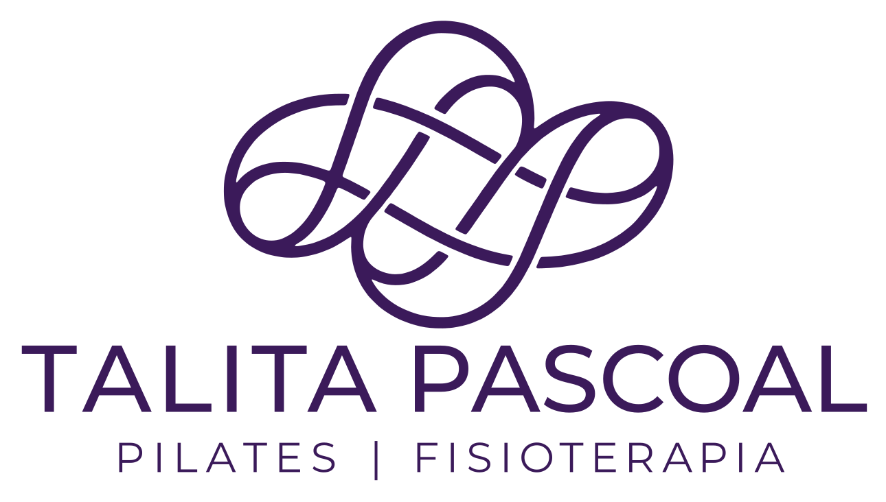
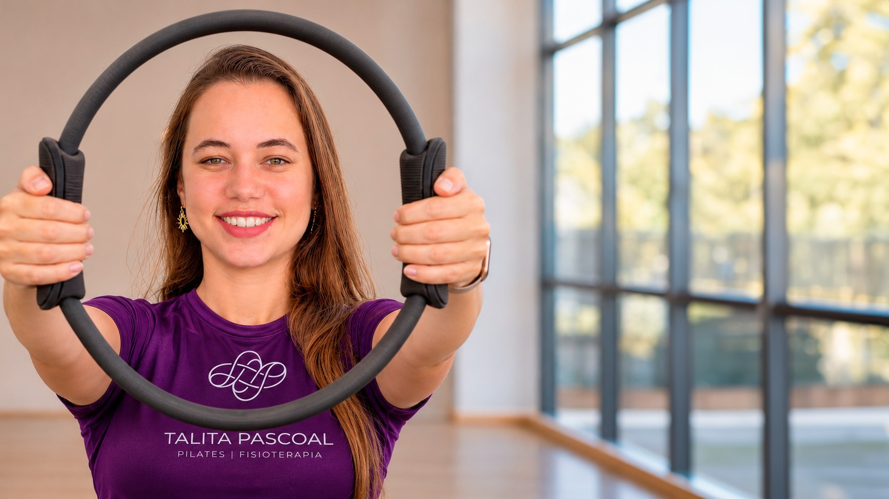
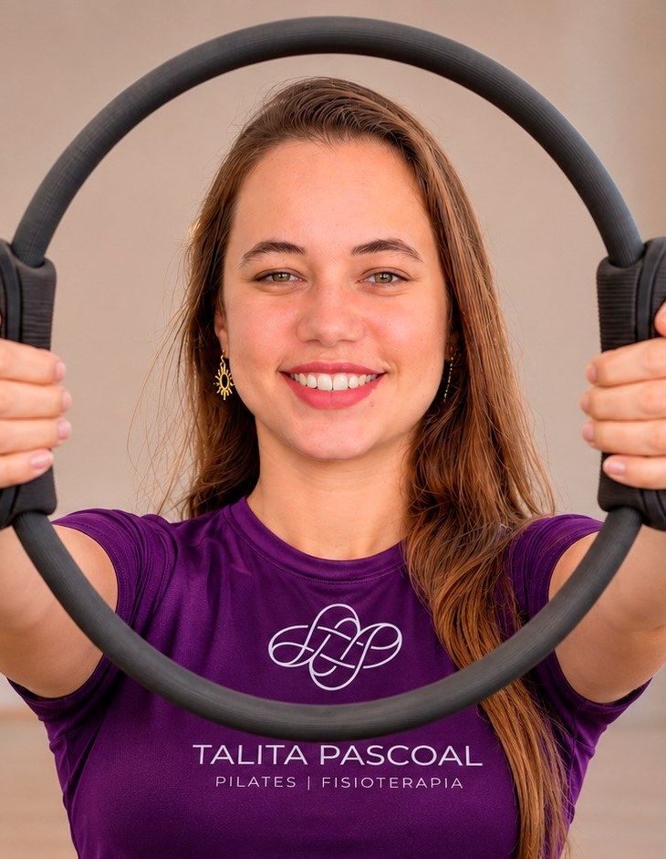

Individual
Atenção exclusiva, no seu ritmo e para os seus objetivos.



Movimento, saúde e qualidade de vida. Atendimento individual ou em grupo, no conforto da sua casa ou do seu condomínio.
Pilates conduzido por fisioterapeuta, com atendimento personalizado e acompanhamento profissional em cada aula.
Responda ao lado e veja como o Pilates Clínico pode se encaixar na sua rotina. Depois, é só marcar a avaliação.
O primeiro passo é uma avaliação individualizada.
Agendar avaliaçãoAtenção exclusiva, no seu ritmo e para os seus objetivos.
Aulas em grupo com acompanhamento profissional.
O Pilates Clínico vai até você, no conforto da sua casa.
Mais movimento e qualidade de vida, sem sair do seu condomínio.
Uma conversa e uma avaliação para entender o seu momento e o que você busca.
Individual ou em grupo, em casa ou no condomínio: o que fizer mais sentido para você.
Reabilitação e condicionamento físico com acompanhamento profissional.
As fotos de exercícios e atendimentos entram aqui.

Fisioterapeuta, trabalha com Pilates Clínico voltado para reabilitação, condicionamento físico, movimento, saúde e qualidade de vida.
O atendimento é personalizado e acontece onde for mais cômodo para você: em casa ou no condomínio, individualmente ou em grupo.
Fisioterapeuta · CREFITO 396473-F